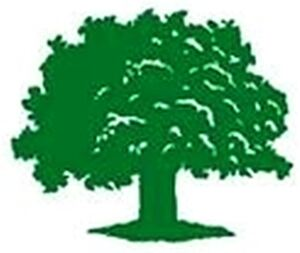

Trade Mark Journal No.2025/048 28 November 2025
WO0000001886774 (3,11,20,24,25,27,35)
Office of origin: European Union Intellectual Property Office (EUIPO)
Date of International Registration:29 August 2025
Date of designation in the UK:
29 August 2025

The mark contains the colour green.
International priority date claimed: 6 May 2025
(European Union Intellectual Property Office (EUIPO))
(019182611)
- Class 3
- Laundry bleach; abrasives; lip glosses; rouges; hair preparations and treatments; mascara; bath preparations; beauty masks; laundry preparations; eyeliner; soap; fragrances for personal use; cleaning preparations; cosmetics; bath preparations, not for medical purposes; sun tan milk; dentifrices; make-up; make-up pencils; oils for cosmetic purposes; eyelid shadow; bath oil; cosmetics for protecting the skin from sunburn; sun-tanning oils; sunscreen preparations; bath pearls; bath soap; after-sun oils [cosmetics]; suncare lotions; sun-tanning gels; cosmetics; face powder; facial scrubs [cosmetic]; cosmetic creams and lotions; sun-tanning gels; polishing preparations; lipsticks; massage oils; after sun creams; hair lotions; make-up removing milks; perfumery for personal use.
- Class 11
- Luminaires; solar lamps; oil lamps; infrared lamps; lamp shades.
- Class 20
- Tables; armchairs; works of art made of amber; wardrobes; curtain rods; slatted bases for beds; racks [furniture]; containers made of cane; credenzas [furniture]; notice boards [signboards] of cork; containers made of horn; mirrors (silvered glass); mattresses; coat racks; vitrines; desks; benches [furniture]; screens [furniture]; divans made of wicker; sofas; towel stands [furniture]; clothes stands; bassinets; cane furniture; furniture; picture frames; roll-top desks; caskets made of cork; reeds [plaiting materials]; chairs [seats]; wicker baskets; bedding, except linen; curtain rings; stools; cupboards; beds; cushions; picture frames.
- Class 24
- Bed linen; bath mitts; towels of textile; mattress covers; table linen; handkerchiefs of textile; textile material; table napkins of textile; ticks [mattress covers]; curtains; cloth; place mats of textile; tags of textile for attachment to clothing; covers for cushions; textiles; travelling rugs [lap robes]; table runners of textile; eiderdowns [down coverlets]; linens; bed blankets; table linen, not of paper; household textile articles; quilts of textile; bed covers; door curtains; furniture coverings of textile; mosquito nets; curtain tie-backs of textile; oilcloth for use as tablecloths; sheets [textile]; silk [cloth]; upholstery fabrics; shower curtains of textile or plastic; wall hangings of textile; sleeping bags.
- Class 25
- Beach wraps; collars; underpants; hats; swim wear for gentlemen and ladies; galoshes; capes; bath robes; dresses; coats; blouses; parkas; gym suits; ear muffs [clothing]; slippers; nighties; headgear; jerseys [clothing]; underwear; shawls; garters; sweaters; jackets [clothing]; shorts; bikinis; neckerchiefs; waistcoats; tunics; pinafores; leggings [trousers]; beach shoes; footwear; hosiery; overalls; dressing gowns; belts [clothing]; swim wear for children; blazers; trousers; bermuda shorts; nightwear; headscarves; costumes; tee-shirts; bonnets; blousons; cardigans; ladies' underwear; neckties; brassieres; peaked caps; tank tops; footless socks; boots; clothing; jogging sets [clothing]; denim jeans; boxer shorts; sweat shirts; skirts; ponchos; twin sets; gloves [clothing].
- Class 27
- Yoga mats; carpet tiles; carpets, rugs and mats; floor coverings.
- Class 35
- Retail services in relation to toiletries; business management; retail services relating to sporting goods; retail services in relation to footwear; retail services in relation to clothing accessories; retail services in relation to cleaning articles; business administration; retail services relating to fragrancing preparations; retail services in relation to lighting; retail services in relation to works of art; online retail store services relating to cosmetic and beauty products; retail services in relation to furniture; retail services in relation to wall coverings; data processing; retail services in relation to headgear; retail services in relation to floor coverings; retail services in relation to hair products; retail services relating to home textiles; retail store services in the field of clothing; shop retail services connected with carpets; advertising; retail services in relation to clothing.
Grüne Erde BeteiligungsgmbH
Representative: BRAUN-DULLAEUS PANNEN EMMERLING PATENT- UND RECHTSANWALTSPARTNERSCHAFT MBB, Platz der Ideen 2, 40476 Düsseldorf, GERMANY